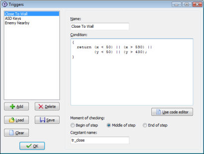
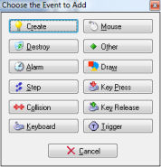

In advanced mode a new type of events is available: trigger events. Trigger events you can define yourself. You specify the condition when the event must be executed. To define trigger events you chose Define Triggers from the Resources menu. The following form will show (in which already some triggers have been defined):

At the left you see a list of all triggers that have been defined. Initially this list is empty. Below there are some buttons with the following function:
Once you are finished you can press the OK button to save the changes. If you do not want to save the changes, close the form with the cross in the top right corner and indicate that you do not want to save changes.
Once you added a trigger you should fill in its properties. First of all you must give the trigger a name. This name will appear in the menu with available triggers and in the event lists for objects. Next you must specify the condition that will trigger the event. This is a piece of GML-code. It must contain a return statement that returns a true or false value. The trigger will fire when the return value is true. Here are some examples.
Assume you want to create an event that happens when the player presses both the Control key and the A key. For this you can use the following condition:
{
return keyboard_check(ord('A')) &&
keyboard_check(vk_control);
}
You can put complete scripts in the condition as long as there somewhere is a return statement. For example, to have an event that happen when the number of balls is between 3 and 5, you can use the following condition:
{
var n;
n = instance_number(obj_ball);
return (n >= 3) && (n <= 5);
}
You can create many other type of trigger events. For example events that check for combinations of keys and mouse buttons, events that check whether you are near to an enemy, events to check whether you collected enough money or score, etc.
If the condition gets a bit long you might want to edit it in the code editor instead. To that end press the button Use code editor.
After you specified the condition you should specify when the condition is tested. There are three options here. You can test the condition at the beginning of a step (just before the begin step event), in the middle (just before the normal step event) or at the end (just before the end step event). Most of the time the default middle position is fine but in certain cases you need the other moments.
Finally, when you also want to call the event from code you can specify a constant with which you can refer in code to the event. See Chapter 4 for more details about calling events from code.
Once you have defined your scripts you can use them when defining objects. When setting the object properties and click on Add Event, you can now select Trigger events.

In the drop-down menu that appears you can select the type of trigger event you want to use. Now you can add actions to this event in the same way as you add actions to other events.